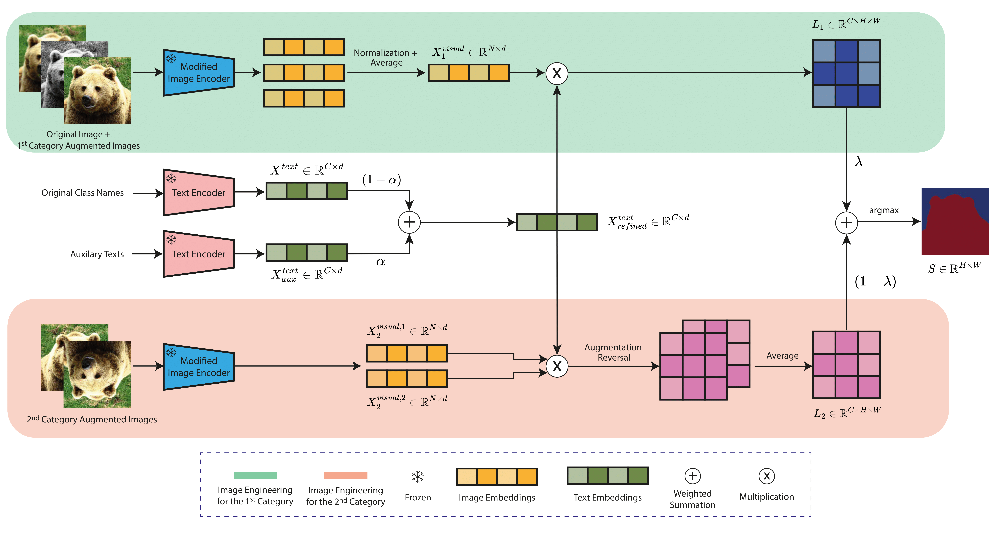

Publications
2026
2025

CVPRW
ITACLIP: Boosting Training-Free Semantic Segmentation with Image, Text, and Architectural Enhancements
IEEE/CVF Conference on Computer Vision and Pattern Recognition Workshops · 2025
Turning image-level vision-language representations into pixel-level predictions through image, text, and architectural enhancements, without additional training.